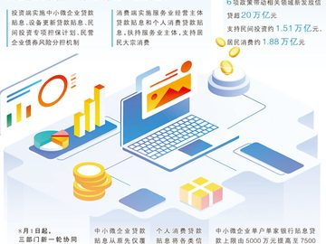
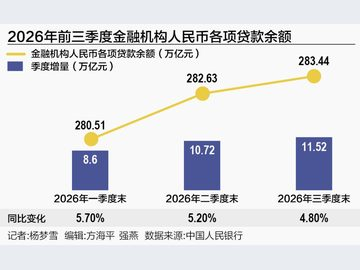
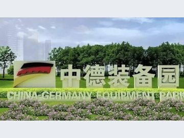

08
辽宁举行高端工业母机科技成果对接会
辽宁省高端工业母机协同创新联盟工作研讨会暨科技成果对接会在辽宁黄海实验室举行。辽宁省科学技术厅及东北大学、沈阳工业大学…

我国财政金融协同促内需一揽子政策实施以来，财政资金牵引金融资源发挥乘数效应，着力激发民间投资，促进居民消费，政策效能加速释放。
记者从国开行、进出口银行、农发行三家政策性银行获悉，国开新型政策性金融工具投放3650亿元，涉及项目总投资5.5万亿元；
扩大内需是战略之举。今年1月，财政部、中国人民银行、国家金融监督管理总局出台财政金融协同促内需一揽子政策，推出“4+2”政策工具：投资端实施中小微企业贷款贴…

10月28日央行发布的《2026年三季度金融机构贷款投向统计报告》（下称“报告”）显示，2026年三季度末，金融机构人民币各项贷款余额283.44万亿元…

中国人民银行统计，2026年三季度末，金融机构人民币各项贷款余额283.44万亿元，同比增长4.8%，前三季度人民币贷款增加11.52万亿元。
央行统计，三季度末，本外币绿色贷款余额49.22万亿元，同比增长13.0%，前三季度增加4.41万亿元。分用途看，基础设施绿色升级贷款、能源
展厅外，光储充一体化设施、车网协同（V2G）充电桩依次排开，华晨宝马厂房顶上铺满光伏板。车间里机器轰鸣依旧，只是“喂”给它们的电有了变化。

辽宁省高端工业母机协同创新联盟工作研讨会暨科技成果对接会在辽宁黄海实验室举行。辽宁省科学技术厅及东北大学、沈阳工业大学…
辽宁鞍山号称“钢都”，是一座因钢而立、因钢而兴的城市。今天，在做大做强钢铁支柱产业的同时，这里还依托广袤土地和历史积淀，借助专业市场和细分赛道…